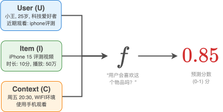
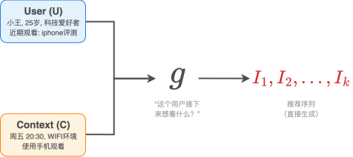
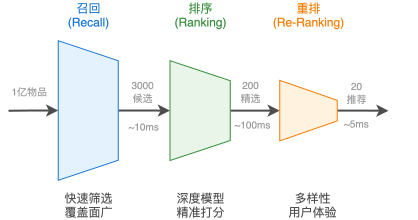
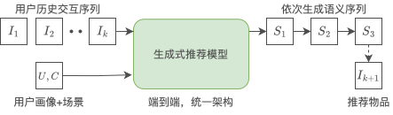
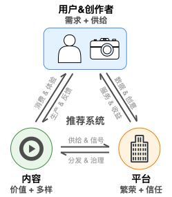

推荐系统是什么？¶
当你早晨打开手机，浏览今日头条的新闻推送，或者在淘宝上寻找心仪的商品时，你可能并未意识到，背后有一套复杂而精密的系统正在为你工作。这套系统在毫秒之间做出了成千上万个判断，决定着你将看到哪些内容，错过哪些信息。这就是推荐系统——现代互联网世界中最核心的基础设施之一。
要真正理解推荐系统，我们不能停留在“它能帮用户找到感兴趣内容”这样的表面描述上。推荐系统的本质，需要我们从三个不同的层次来观察和理解：从最微观的单个预测开始，到工业化的规模流程，再到宏观的生态平衡。只有通过这样的层次递进，我们才能真正把握推荐系统的核心逻辑。
微观视角：推荐问题的两种根本范式¶
让我们从最基本的单元开始思考。推荐系统面临的核心问题看似简单：如何为用户找到最有价值的内容？但对这个问题的回答方式，存在两种截然不同的思路。在展开它们之前，我们先来理解两种思路共同的基础——推荐系统需要深入理解的三个关键要素。
想象你正在使用一个视频应用。此时此刻，推荐系统面临的核心问题是：在成千上万个可能的视频中，哪些最有可能与你产生有价值的连接？这里的“连接”不是抽象概念，而是具体的、可观察的行为——你可能会点击某个视频，观看超过30秒，甚至点赞或分享。
要做出有效的推荐，无论采用哪种范式，系统都需要深入理解三个关键要素。首先是理解用户。系统需要知道你是谁，你的兴趣偏好如何。你的历史观看记录是最重要的信号——如果你经常观看科技类视频，这强烈暗示了你的兴趣方向。同时，你的显式反馈（比如你主动点击的“不感兴趣”按钮）和基本画像信息（年龄、地理位置等）也为系统提供了重要线索。更微妙的是，系统还会捕捉你的实时意图——你刚刚搜索了什么关键词，或者在这次会话中点击了哪些内容。所有这些信息汇聚在一起，构成了系统对你这个独特个体的多维度理解。
接下来是理解物品。对于一个视频而言，系统需要理解它的内容属性——是科技类还是娱乐类，时长多少，制作质量如何。同样重要的是这个视频的统计属性，也就是它的社会化证明：有多少人观看过，平均评分如何，最近的互动趋势怎样。这些信息帮助系统判断内容的整体质量和受欢迎程度。
最后是理解场景。用户和内容的连接从不发生在真空中，场景因素往往决定了推荐的成败。现在是工作日的上午还是周末的深夜？用户是在拥挤的地铁上还是安静的家中？这些看似细微的差别，实际上会显著影响用户的内容偏好。一个在地铁上通勤的用户更可能对短视频感兴趣，而在家中休闲的用户则可能愿意观看较长的深度内容。
综合这三个要素——用户、物品、场景——推荐系统面临一个根本性的选择：如何利用这些理解来做出推荐？这正是两种范式分道扬镳之处。
第一种思路是判别式推荐。它将推荐问题定义为：给定一个具体的用户-物品-场景三元组，预测用户会对这个物品产生正面行为的概率。其核心可以抽象为一个打分函数：\(Score = f(User, Item, Context)\)。系统需要对每个候选物品逐一评估，计算匹配分数，然后择优推荐。这就像一位评委，面对所有参赛选手，逐一打分，最后选出得分最高的几位。
{kind=link}

判别式推荐的核心：打分函数¶
判别式推荐通过整合用户特征(U)、物品特征(I)和场景特征(C)，对每个候选物品逐一打分，预测用户与物品产生有价值连接的可能性。
第二种思路是生成式推荐。它从根本上重新定义了问题：不再逐一评估候选物品，而是让模型根据对用户和场景的理解，直接“创作”出推荐结果。其核心可以抽象为一个生成函数：\([I_1, I_2, \ldots, I_k] = g(User, Context)\)。模型以用户的历史交互序列和当前场景作为输入，通过自回归解码直接生成推荐物品的序列。这就像一位了解你品味的朋友，不需要翻遍所有选项，而是直接告诉你“你接下来应该看这几个”。
{kind=link}

生成式推荐的核心：序列生成¶
生成式推荐以用户的历史交互和场景为输入，通过生成模型直接输出推荐物品序列，无需逐一评估候选物品。
两种范式的输入看似相同：都需要理解用户、物品和场景——但它们提出的问题截然不同。判别式问的是“这个用户会喜欢这个物品吗？”，生成式问的是“这个用户接下来想看什么？”。前者是在有限候选中择优，后者是在开放空间中创造。这一差异看似微妙，却深刻地影响了系统架构、优化目标和工程实现的方方面面。
如果从更纵深的时间线来审视，推荐算法的发展历程呈现出一条清晰的能力演进轨迹，它同时贯穿了判别式与生成式两种范式。最初是纯ID的记忆：协同过滤将物品视为不透明的符号，通过记忆“看过A的人也看了B”这样的共现模式来推荐。然后是深度学习的泛化：深度网络通过特征交叉和序列建模，将学到的知识泛化到未曾见过的用户-物品组合，但物品本身仍是不携带语义信息的原子ID。接着是语义ID的理解：当物品被编码为携带语义的结构化Token时，系统开始真正“理解”物品的内容含义，新物品无需积累行为数据即可被推荐。最前沿的是大模型的推理：模型不再隐式计算一个分数，而是显式地分析用户意图、评估匹配逻辑、给出推荐理由，从模式匹配器进化为能解释自身决策的推理者。
这四个阶段并非简单的线性替代，而是层层叠加、彼此共存。今天的工业级系统中，基于ID的协同过滤仍然是召回的重要通路，深度学习的泛化能力支撑着从召回到排序的各个环节，语义ID和大模型推理则在最前沿的生成式架构中崭露头角。判别式与生成式两种范式在这条演进轨迹上交织前行，共同构成了现代推荐系统的技术全景。
工业视角：规模化的两条技术路线¶
理解了推荐的两种基本范式后，我们面临一个共同的现实挑战：规模。一个典型的视频平台拥有数亿用户和上亿个视频，推荐系统需要在毫秒级延迟内完成从海量物品到个性化推荐的全过程。如果页面加载超过几秒钟，大部分用户就会直接离开。
这就是推荐系统工程化面临的核心矛盾：如何在极有限的时间内，从海量的候选中找到最优的推荐结果？
两种范式给出了截然不同的解决方案。
判别式的解法：多阶段流水线。 判别式范式的核心困难在于：如果要为每个用户计算他与所有物品的匹配分数，即使是最强大的服务器也会瞬间崩溃。工业界的解决方案是采用分阶段的漏斗式架构，通过“召回-排序-重排”的三层流水线来逐步缩小候选范围，在效率和效果之间找到平衡点。
第一阶段是召回，其目标是快速从全量物品库中筛选出几千个可能相关的候选。召回阶段奉行“宁可错杀一千，不可放过一个”的策略，它不追求精准，但求全面。为了达到极致的速度，召回模型通常比较简单，使用的特征也相对有限。比如，系统可能使用协同过滤方法快速找到与你品味相似的其他用户，然后推荐他们喜欢的内容；或者基于内容相似性，为你召回与你最近观看内容类似的其他视频。
经过召回阶段的快速筛选，候选集从上亿缩减到了几千个。这时进入第二阶段——排序。排序阶段是预测函数\(f\)真正发挥威力的地方。系统会动用最复杂的模型（往往是深度学习模型），融合用户、物品、场景的所有可用特征，为每个候选物品计算精确的预测分数。这个阶段追求的是预测精度的最大化，计算成本相对较高，但由于候选集已经大幅缩小，整体耗时仍在可接受范围内。
最后一个阶段是重排，其目标是对排序后的结果进行最终优化。重排阶段解决的一个关键问题是：预测分数最高的列表，不一定等于用户体验最佳的列表。系统在这个阶段会考虑多样性、新颖性、公平性等因素。比如，如果排序后的前十个推荐都是同一类型的内容，重排阶段会适当调整，引入一些其他类型的优质内容，避免用户产生审美疲劳。同时，这个阶段也会处理一些业务规则，比如插入必要的广告内容或运营推广的物品。
{kind=link}

工业级推荐系统的三阶段流水线架构¶
通过召回、排序、重排三个阶段，推荐系统将亿级候选逐步筛选为最终推荐列表，在效率与效果之间实现平衡。
这套三阶段流水线的核心逻辑很简单：在不同阶段采用不同的策略，逐步从“可能相关”筛选到“最优匹配”。召回追求速度和覆盖度，排序追求精度，重排追求体验。每个阶段都有其不可替代的价值，共同构成了判别式推荐系统的技术骨架。
生成式的解法：端到端生成。 生成式范式提出了一种截然不同的思路。既然模型可以直接“生成”推荐结果，为什么还需要多阶段的候选筛选呢？生成式推荐将用户的历史交互序列视为“上下文”，通过Transformer等自回归模型直接解码出推荐物品的Token序列——整个过程在一个统一的模型中端到端完成，无需召回、排序、重排的多阶段级联。
{kind=link}

生成式推荐的端到端架构¶
生成式推荐将用户历史交互作为上下文输入，通过统一的生成模型直接输出推荐序列，将多阶段级联压缩为端到端的单一过程。
这种端到端架构消除了多阶段流水线的三个核心痛点：不同阶段之间的目标不一致（召回优化相关性、排序优化点击率、重排优化多样性，各自为战）、逐级筛选带来的信息损失（召回阶段过滤掉的优质物品在后续阶段永远无法被看到）、以及异构模块导致的计算碎片化（不同阶段使用不同模型，难以充分利用现代GPU的算力）。
当然，端到端生成式架构仍在快速发展中，面临着生成效率、物品空间覆盖、工程化部署等方面的挑战。目前，两种架构在工业界并行发展：判别式流水线通过“分而治之”在成熟场景中稳定服务，生成式架构通过“端到端优化”在前沿探索中展现出巨大潜力。
宏观视角：构建多方共赢的生态系统¶
当我们把推荐系统放在更大的视野中观察时，会发现一个更深层的问题：一个技术上完美的推荐系统，是否就是一个真正优秀的推荐系统？
答案往往是否定的。这里有一个经典的“准确率陷阱”：假设一个用户刚刚将一款手机加入购物车，此时推荐系统向他推荐这款手机，点击率和购买转化率可能接近100%。从技术指标看，这个预测极其“准确”，但它为用户创造了什么价值呢？几乎没有。用户本来就要买这部手机，推荐系统只是重复了他已知的信息，没有产生任何增量价值。
这个例子揭示了一个重要认知：推荐系统的最终目标不是单纯追求技术指标的最大化，而是构建一个能让所有参与方长期受益的健康生态。在这个生态中，存在三个基本支点：用户与创作者、内容、平台。
在这个生态中，用户与创作者构成了内容供需的两端，但两者的界限正在变得模糊。传统意义上，用户是内容的消费者，创作者是内容的生产者。但在现代推荐系统中，许多用户同时也是创作者——他们既消费内容，也生产内容。这种身份的融合催生了多样化的内容生产模式：
UGC（User Generated Content）：普通用户自发创作的内容，具有规模大、个性化强但质量参差不齐的特点。
PGC（Professionally Generated Content）：专业团队或机构生产的内容，通常制作精良、质量稳定。
AIGC（AI Generated Content）：借助人工智能技术生成的内容，正在快速发展，能够实现大规模个性化生产。
这种多元化的内容生产格局为推荐系统带来了新的机遇和复杂性。一方面，丰富的内容来源能够更好地满足用户的个性化需求；另一方面，如何在不同质量层次的内容中进行有效分配，如何平衡专业内容与用户原创内容的曝光机会，成为推荐系统设计中的重要考量。
对于内容而言，它是连接用户与创作者的媒介，是推荐系统真正分发的“原子单位”。推荐系统需要在理解内容属性的基础上，建立更丰富的匹配机制，让优质内容能够高效找到合适的受众。一个健康的推荐系统，不仅要分发受欢迎的内容，还要持续发掘潜力内容，避免整个生态滑向“头部集中、长尾沉没”的局面。
对于平台而言，它承担着生态协调者的角色。一方面，平台需要优化推荐效果，提升用户满意度和使用时长；另一方面，它还要关注生态的长期健康，比如维护内容多样性、抑制低质内容泛滥、保护创作者积极性。有时平台甚至需要牺牲部分短期指标来换取长期信任，例如降低对标题党内容的推荐权重，以维护整体体验。
{kind=link}

推荐系统生态中的三角关系¶
推荐系统生态包含用户与创作者、内容、平台三个核心要素。用户既是内容的消费者，也是潜在的生产者；内容是价值的核心媒介；平台负责连接与分配。推荐系统需要在三者之间保持动态平衡。
真正优秀的推荐系统，是一个精巧的平衡器。它需要在用户与创作者、内容质量、平台发展之间找到动态平衡点，确保生态系统的长期健康。这要求推荐系统设计者不仅是技术专家，更需要具备生态思维，能够从多方利益的角度思考问题。
从认知到实践：本书的技术地图
通过这三个层次的分析，我们已经对推荐系统有了一个立体的认知。从微观的双范式视角，到工业的两条技术路线，再到宏观的生态平衡，每一个层次都揭示了推荐系统的不同侧面，也对应着不同的技术挑战和解决方案。
但认知只是开始，真正的挑战在于如何将这些理解转化为可操作的技术方案。在推荐系统的发展历程中，研究者和工程师们提出了数百种不同的算法和模型，每一种都试图在特定场景下优化推荐效果。面对如此丰富的技术选择，初学者往往会感到迷茫：这些模型之间有什么关系？在什么情况下应该选择哪种方法？如何构建一个完整的推荐系统？
接下来，我们将为你绘制一幅完整的推荐系统技术地图。本书沿着判别式与生成式两条主线展开，同时串联起从ID记忆到深度泛化、从语义理解到模型推理的能力演进。前半部分深入判别式推荐的工业实践，沿着召回、排序、重排的流水线逐步深入；后半部分探索生成式推荐的前沿技术，从基础范式到规模化架构，从端到端建模到推理与扩散，展现这一新范式的完整技术图景。最后，我们还会通过完整的项目实践，帮你将理论知识转化为可运行的系统。从判别式的精雕细琢到生成式的范式突破，希望这幅地图能帮你建立对推荐系统技术体系的清晰认知，并把握正在发生的技术变革。